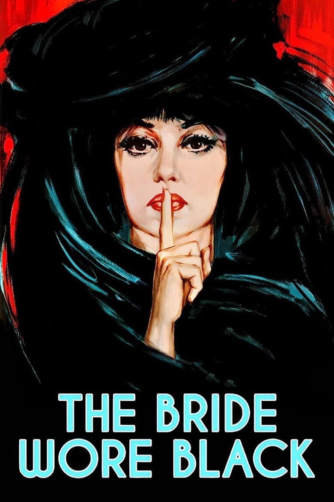

Fiche technique

Synopsis
Sur le parvis de l'église, au sortir de la cérémonie, David s'effondre : une balle, tirée d'une fenêtre voisine, vient de faire de Julie Kohler une veuve en robe de mariée. Après une tentative de suicide, Julie disparaît — et réapparaît, méthodique, sur la route de cinq hommes qui ne la connaissent pas : Bliss, Coral, Morane, Delvaux, Fergus[1].
Un à un, sous des identités d'emprunt, elle les approche, les séduit ou les endort de confiance, puis les raye de sa liste. Le film ne cache ni son plan ni son mobile très longtemps : la question n'est pas de savoir qui elle est, mais si quelque chose — la police, un peintre qui la regarde vraiment, ou ce qui lui reste de vie — pourra interrompre la cérémonie funèbre qu'elle s'est prescrite[2].
Contexte de production
Le projet vient de loin : Truffaut a découvert très jeune The Bride Wore Black (1940) de William Irish — pseudonyme du New-Yorkais Cornell Woolrich, qu'il décrivait comme « le grand écrivain de la série blême », artiste « de la peur, de l'horreur et des nuits sans sommeil »[2]. L'adaptation, coécrite avec Jean-Louis Richard, est tournée du 16 mai au 10 novembre 1967 entre Paris, la Côte d'Azur et la vallée du Grésivaudan, en coproduction franco-italienne avec Dino De Laurentiis[1].
Pour la Mariée, Truffaut n'envisage que Jeanne Moreau — mais à une condition : que ce film « n'ait aucune image en commun avec Jules et Jim ». Il lui demande une vengeresse froide, la moins expressive possible — « comme Bogart », aimait-il à dire[2]. Et pour parachever l'hommage au maître qu'il venait d'interviewer cinquante heures durant (le livre d'entretiens paraît en 1966), il engage Bernard Herrmann, le compositeur d'Hitchcock, pour leur seconde et dernière collaboration après Fahrenheit 451[2].
Structure narrative
La construction est celle d'une litanie : cinq mouvements, un par nom, chacun avec son décor, son registre (comédie mondaine, huis clos pathétique, farce conjugale, atelier d'artiste) et son mode opératoire — l'écharpe, le poison, l'enfermement, la flèche. Entre les exécutions, des flashbacks reconstituent par fragments le mariage et la balle perdue, si bien que la cause n'est révélée en entier qu'une fois la mécanique déjà bien entamée[1][2].
Truffaut applique ici la leçon de suspense hitchcockienne qu'il connaissait par cœur : le spectateur en sait toujours plus que les victimes, et l'attente remplace la surprise. Mais il déplace l'enjeu — pas de whodunit, pas d'enquêteur héroïque : la seule question dramatique est la complétude de la liste. D'où cette fin logique jusqu'au vertige, où l'arrestation même de Julie devient un moyen d'atteindre le dernier nom, derrière les murs d'une prison[2].
Mise en scène et procédés techniques
Raoul Coutard photographie en Eastmancolor une héroïne qui ne porte que du blanc et du noir — robe de deuil ou robe de lys, jamais de demi-teinte : la palette morale du film est cousue dans sa garde-robe. Truffaut regrettera pourtant la couleur, estimant que le noir et blanc aurait « épaissi le mystère »[2] — l'un des griefs qu'il nourrissait contre son propre film.
La partition de Herrmann, elle, travaille l'ambiguïté cérémonielle : la marche nuptiale de Mendelssohn y côtoie des cordes funèbres, mariage et enterrement fondus en un seul rituel sonore. Et la mise en scène cultive un lyrisme trouble que la critique a bien identifié : « jamais thriller n'aura été aussi sensuel, emballé comme un film d'amour romantique » — une « danse macabre » filmée avec la douceur d'une romance[3]. Les meurtres eux-mêmes sont presque pudiques ; la violence du film est toute entière dans la patience de Julie, filmée comme on filme une apparition — la femme voyage de ville en ville, tel Cary Grant dans La Mort aux trousses, silhouette irréelle posée dans des décors quotidiens[3].
Personnages principaux
Julie Kohler (Jeanne Moreau) est l'inversion terme à terme de la femme fatale : elle en a tous les attributs — la séduction, le mystère, la mort au bout — mais Truffaut lui donne ce que le film noir refuse d'ordinaire à cette figure : une raison. La critique l'a noté dès l'époque : le cinéaste « bouleverse l'image traditionnelle de la femme fatale en lui donnant une raison valable de se venger », en faisant une victime peut-être détraquée plutôt qu'une prédatrice[3]. Moreau la joue en somnambule exacte, ange et démon à la fois — un être que le film n'absout ni ne condamne[3].
Face à elle, les cinq hommes composent une typologie douce-amère de la vanité masculine : le séducteur mondain (Claude Rich), le solitaire pathétique qui vit d'un souvenir de femme (Michel Bouquet), le notable politicien pontifiant (Michael Lonsdale), le receleur minable (Daniel Boulanger) et le peintre (Charles Denner) — le seul qui regarde Julie au lieu de se regarder en elle, et qui fait d'elle son modèle en Diane chasseresse, arc à la main : l'art seul, dans ce film, voit la vérité en face, et c'est lui qu'elle frappe avec la flèche[1][3].
Thèmes
Le deuil, d'abord — non comme tristesse mais comme programme. Julie ne pleure pas : elle exécute, et le film suggère que cette liturgie de la vengeance est la seule forme de fidélité qui lui reste. La robe alternativement blanche et noire dit l'essentiel : la noce et le deuil sont devenus, pour elle, un seul et même état civil.
Le hasard, ensuite — matière première de tout Woolrich : une balle partie par accident, un jeu d'hommes désœuvrés, et cinq vies ordinaires deviennent coupables. La disproportion entre la légèreté de la faute et l'implacabilité du châtiment est le vrai sujet moral du film, qui refuse soigneusement d'arbitrer — ni réquisitoire contre Julie, ni absolution des cinq[3]. Enfin, le film retourne le regard masculin comme un gant : chacun des cinq projette sur cette inconnue son propre fantasme — la conquête, la muse, l'épouse idéale — et c'est précisément ce fantasme qui les tue. La femme imaginée par les hommes se révèle être leur exécutrice : en 1968, sous ses dehors de série noire élégante, c'est une idée d'une modernité considérable.
Réception critique et postérité
À sa sortie en avril 1968, le film réunit 1 274 411 spectateurs en France et la critique salue l'exercice d'admiration :
« L'élève a regardé les leçons du maître, les a assimilées. Le voici maître à son tour. » Jean-Louis Bory, 1968, cité par Wikipédia[1]
Le spectateur le plus sévère du film restera Truffaut lui-même : il regrettait la couleur, et pensait avoir confié à Moreau un rôle de vengeresse stoïque qui ne lui convenait pas[2]. Longtemps rangé parmi les Truffaut « mineurs », le film n'a cessé de gagner en stature : célébration du film noir et du suspense hitchcockien[2], il est aussi devenu une référence de la culture populaire — la parenté avec Kill Bill est régulièrement soulignée (Tarantino s'en est toujours défendu), et Kate Bush en a tiré une chanson, « The Wedding List »[1].
Conclusion
La mariée était en noir est un paradoxe réjouissant : le film le plus « appliqué » de Truffaut — un exercice d'hitchcockisme assumé, jusqu'au compositeur emprunté au maître — et en même temps l'un de ses plus personnels, tant la Mariée prolonge sa galerie d'obsédés magnifiques, ces êtres pour qui aimer et détruire procèdent du même absolu. Que l'auteur l'ait mal aimé ne change rien à l'affaire : les cinéastes se trompent souvent sur leurs films comme les pères sur leurs enfants.
Reste une figure inoubliable, mi-lys mi-corbeau, qui traverse la France comme une allégorie : la femme rêvée par les hommes, revenue leur présenter la facture. Si le film a tant essaimé — jusqu'au sabre de Beatrix Kiddo —, c'est qu'il a inventé quelque chose qui n'appartient ni à Hitchcock ni à Woolrich : la vengeance filmée comme un chagrin d'amour, cérémonieuse, sensuelle et sans pardon.
Sources
- Wikipédia (fr) — « La mariée était en noir (film) » : fiche technique, distribution, dates de tournage et de sortie, box-office, citation de Jean-Louis Bory, postérité (Kill Bill, Kate Bush). fr.wikipedia.org
- Libre Critique — « La Mariée était en noir (1968) » et pages associées consultées via recherche web : rapport de Truffaut à William Irish/Cornell Woolrich (« série blême »), consignes à Jeanne Moreau (« comme Bogart », rien de commun avec Jules et Jim), collaboration Herrmann, regrets de Truffaut. librecritique.fr
- CinéDweller — « La mariée était en noir : la critique du film » : renversement de la femme fatale, lyrisme (« jamais thriller n'aura été aussi sensuel »), danse macabre, référence à La Mort aux trousses, position morale du film. cinedweller.com
- The Movie Database (TMDB) — fiche du film (données factuelles, affiche). themoviedb.org/movie/4191